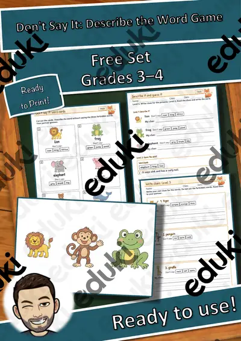
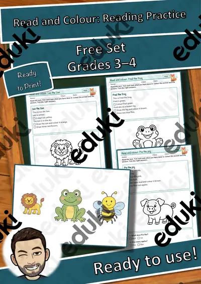
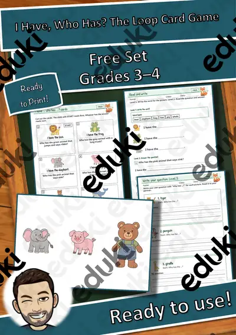
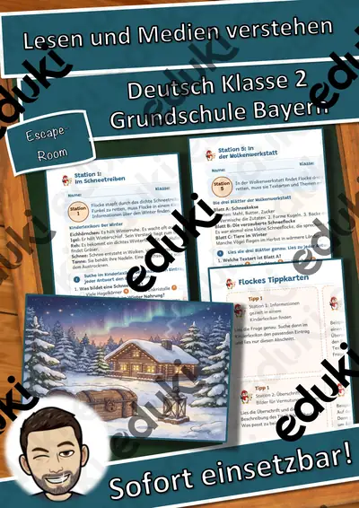
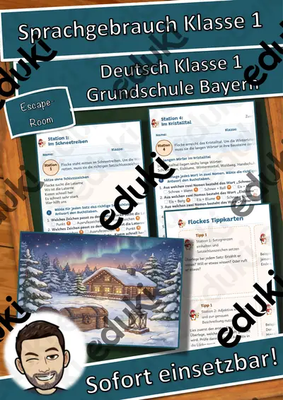

Winter Escape Room, English Year 6 (KS2): 6 Stations, 2 Locks, 1 Magic Word (FREE)
The winter lantern Sparkle has gone out and is locked in a chest! The fox Ronja asks your class for help: whoever solves the six stations wins a number lock for the chest and a magic word that makes Sparkle shine again. An escape room without any computer, perfect for winter and Advent.
Each station practises one area of English (Year 6, KS2, ages 10 to 11):1 Word classes · 2 Verb tenses · 3 Subject, verb, object and adverbial · 4 Spelling strategies · 5 Reading a non-fiction text · 6 Reading and writing a story
Graded hint cards (two per station) never give away the answer, only the strategy and the way. So children with different prior knowledge can work together in one group.
Included (24 pages): teacher notes with timing (about 90 minutes), preparation, copy plan and curriculum link; page on the 10 features of good teaching (Hilbert Meyer); Ronja's letter to read aloud, with rules; answer sheet with number lock and magic word; 6 station sheets with a solution word for self-checking; 12 hint cards to cut out; 6 station signs; "My review" sheet with can-do list; certificate; solutions for the teacher.
All illustrations are our own (AI-assisted and checked one by one). This material is free. Enjoy rescuing the lantern!
Passend zu den Bildungsstandards für die erste Fremdsprache (Englisch, Englisch).
Ähnliche Materialien

English Workshop: Don't Say It: Describe the Word Game – free, Grades 3–4

Escape-Room Winter – Deutsch Klasse 5 für die Mittelschule: 6 Stationen, 2 Schlösser, 1 Zauberwort (GRATIS)

English Workshop: Read and Colour: Reading Practice – free, Grades 3–4

English Workshop: I Have, Who Has? The Loop Card Game – free, Grades 3–4

Escape-Room Schreiben in Klasse 2 – Deutsch Klasse 2 Grundschule: 6 Stationen, 2 Schlösser

Escape-Room Schreiben – Deutsch Klasse 2 Grundschule: 6 Stationen, 2 Schlösser

Escape-Room Lesen und Medien verstehen – Deutsch Klasse 2 Grundschule: 6 Stationen, 2 Schlösser
